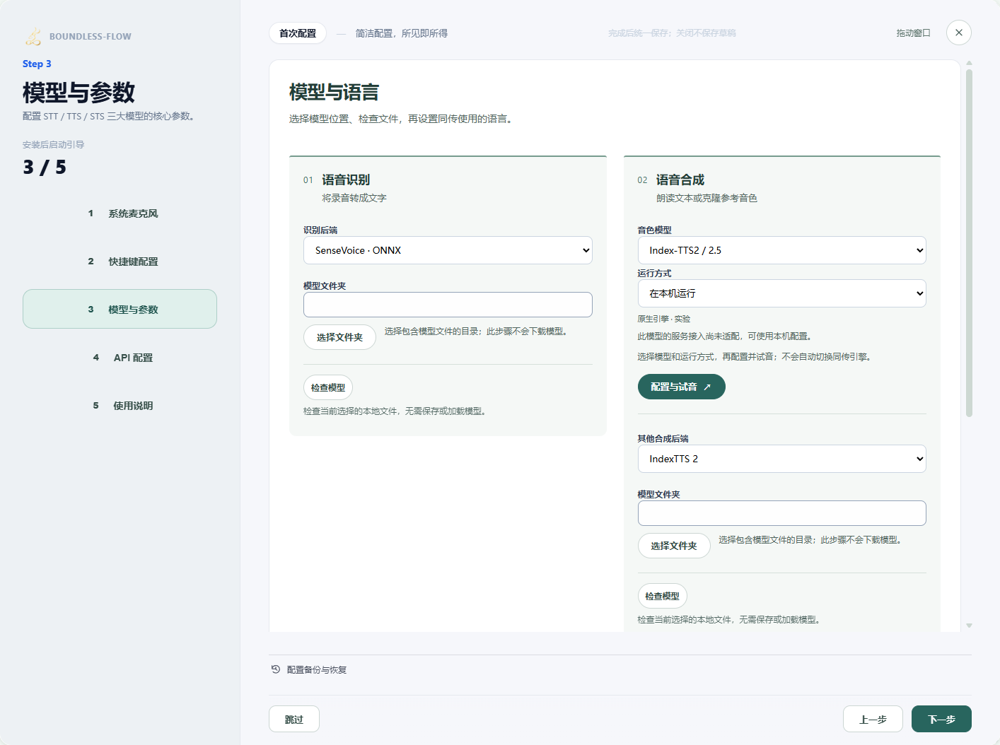
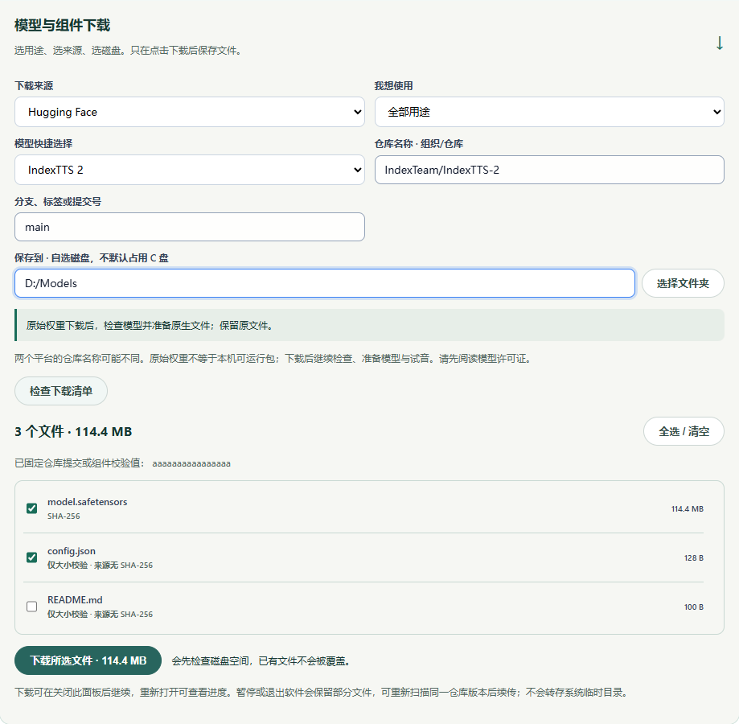
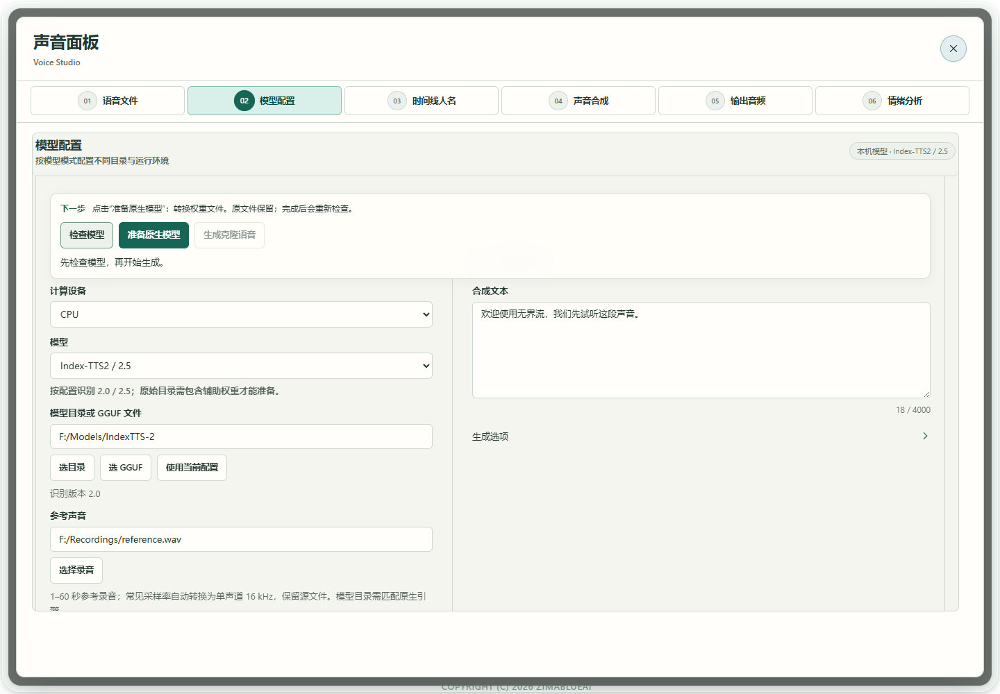

场景教程
模型下载与软件配置
按你要实现的功能选文件，区分原始权重、原生包与 API。
你能得到什么
知道要下载什么、放在哪里、在软件哪一处选择，以及哪些路径仍未开放。
开始前准备
- 使用可写、有足够剩余空间的自选模型文件夹。模型与应用分别保存；磁盘空间和显存需求随模型及量化变化，没有适用于全部模型的最低配置。
- 下载前查看下面对应来源的模型卡与许可。浏览器下载需要网络；阅读本指南和已配置本地模型可离线，但 API 需要对应服务可达。
- 不要一次下载全部模型。先实现一项功能并短试，文件检查不等于实际推理、质量或实时性能已经通过。
- 运行组件选择「运行组件 · 官方发布包」，填写官方 HTTPS 文件直链、保存文件名、官方公布的文件大小（字节）和 SHA-256。当前只下载并校验，不自动安装或运行；组件需匹配系统、显卡与模型后端。
逐步操作
- 01
先按任务选择运行方式
只要文字，先选择识别模型；要翻译，再配置翻译模型或 API；要纪要，另配 LLM；克隆／设计再选择 TTS。语音工具的「本机模型」读取本地包，「模型服务」连接已经运行的服务，「云端 API」使用账户。三个入口不自动互相转换。 FireRed Instruct 的原生路线读取原始完整目录，不需要另开服务。

真实软件界面 · 点击放大；图中示例数据不代表你的结果 - 1先选择模型与参数。
- 2点击进入音色模型的配置与试音。
- 02
在软件内选择来源、磁盘与完整文件
打开「配置引导页 → 模型与参数」，展开「还没有模型文件？下载模型与组件」。在「下载来源」选择 Hugging Face 或 ModelScope 的公开仓库，使用快捷选择或填写「组织/仓库」及分支、标签或提交号；两平台仓库名称可能不同，先阅读对应模型卡和许可。点击「选择文件夹」选自己的磁盘，再点「检查下载清单」。按模型卡勾选全部所需分片、配置、tokenizer、编解码器及辅助模型，确认大小后点「下载所选文件」。不要把网页另存为权重，也不要只下载主文件。受限仓库的账户授权尚未接入。

下载配置示例 · 图中为测试清单；实际文件与大小以所选平台清单为准。点击放大。 - 03
看进度，需要时暂停或续传
查看已下载大小、文件数量和当前文件。折叠下载区或切换配置步骤不会暂停后台；同一引导中会保留来源、仓库、版本、目录和勾选。需要停下时点「暂停下载」并等暂停完成。续传前使用同一来源、版本和目录重新「检查下载清单」，再下载所选文件；来源无摘要时可能重新下载，不保证每个文件从中断处继续。关闭整个引导会结束这次草稿，重启软件后请重新填写和扫描。
下载配置示例 · 图中为测试清单；实际文件与大小以所选平台清单为准。点击放大。 - 04
下载完成后，先找对模型目录或单文件
看到下载完成后点「复制模型路径」，记下自己的保存位置。要选择目录的模型，选含配置和全部配套权重的根目录；要求 ONNX 或 GGUF 单文件的入口，应在该目录里选实际文件，不能把目录当文件。声纹选择 speaker embedding ONNX，情绪分析选择九类分类 ONNX；同为 .onnx 也不能互换。下载不自动切换正在使用的模型，下面一步还需在对应功能里选择并检查。
下载配置示例 · 图中为测试清单；实际文件与大小以所选平台清单为准。点击放大。 - 05
在软件选择路径，再检查
识别在「配置引导页 → 模型与参数」配置；声音在「语音工具 → 模型配置」选择模型与目录；声纹在「声纹识别 → 选择模型」选择实际文件。按提示区分选目录和选单个 GGUF／ONNX 文件，修改路径后重新检查。克隆还要选择参考录音；换录音后必须再点「检查模型」，旧参考检查不能用于新录音。

真实软件界面 · 点击放大；图中示例数据不代表你的结果 - 1检查和生成固定在编辑区上方。
- 2文件检查通过后仍需实际试听。
- 06
需要转换时准备，之后才提前加载
先点击编辑区上方的「检查模型」，按「下一步」提示操作。需要转换时，点击同一操作区的「准备原生模型」：Index 新增包位于 .boundless-flow/native 固定目录；VoxCPM2 在原模型目录新增 audiovae.safetensors。原文件保留，转换与关联需要源盘空间。完成后重新检查。「提前加载模型」在模型列下方，是可选的内存加载，不补齐下载、不转换文件，也不等于实际推理预热。 FireRed 原始目录无需此转换；同传开始前另有模型、参考音和输出准备，详见同传教程。 模型文件和软件运行组件是两回事。提示缺原生组件时，请使用带齐配套组件的完整应用目录；「准备原生模型」不会安装 CUDA 或补齐运行组件。缺模型文件时按缺项清单补齐到自选模型盘，再返回检查；不要改名绕过提示。 FireRed若组件支持且已选择、检查参考音，加载按钮会显示「预置模型与参考音」，可提前处理模型、参考音和解码前缀，不生成语音。未选参考音或旧组件只支持「提前加载模型」。两种准备完成后都还要生成短句试听；换参考音和原文后重新检查、准备。旧截图只说明当时的按钮位置，不展示这个条件式新按钮。

真实软件界面 · 点击放大；图中示例数据不代表你的结果 - 1下一步根据检查结果提示。
- 2按需转换原始权重，保留原文件。
- 07
用自己的短样本证明功能可用
转录读一小段话，翻译试一句文本，声音生成一句目标语言，声纹用另一段独立录音。检查完成状态、试听或核对结果后再保存配置。未开放模型即使文件齐全也不能靠检查变成可用。

真实软件界面 · 点击放大；图中示例数据不代表你的结果 - 1选择已配置的翻译服务。
- 2先填写一小段测试原文。
- 3选择目标语言。
- 4配置有效后点击开始翻译。


按模型查看下载与配置
下面是来源和软件适配状态，先选一款满足任务的模型。外部来源于2026-10-09核对；下载与账户操作需要联网。
Whisper本机音频转写
需要的文件
需要匹配当前原生运行时的 GGUF／GGML 文件；官方 Python safetensors 包不能直接作为该文件使用。按对应转换模型来源取得，中文选择多语模型，不用仅英文 .en 版本。
软件配置路径
配置引导页 → 模型与参数 → Whisper → 选择对应模型文件，或「音频转写」的 Whisper 路线。选择后用短录音测试。
当前适配状态
已有选定中文转写证据；文件转写不表示此路线所有功能都支持实时字幕或手机端。
打开模型来源 ↗SenseVoice · Native原生音频转写
需要的文件
官方原始模型是来源，软件原生路线需匹配的 GGUF／GGML 模型与运行组件；不能把原始 .pt 权重改后缀当作原生文件。
软件配置路径
配置引导页 → 模型与参数 → SenseVoice · Native → 选择适配模型文件。没有适配包时可使用匹配的 ONNX 路线或已配置服务。
当前适配状态
已验证部分原生中文转写；不承诺任意上游版本直接加载。
打开模型来源 ↗FunASR保留现有实时识别兼容路线
需要的文件
当前兼容路线使用相应 .pt、config.yaml 和配套词表／运行组件；FunASR 是工具家族，不是任意同名模型均可用。较新 ASR 模型需单独适配，不能根据上游列表认定软件已支持。
软件配置路径
配置引导页 → 模型与参数 → FunASR → 选择与现有兼容运行组件匹配的完整模型目录 → 短录音验证。
当前适配状态
现有功能保留，可能使用旧 Python 兼容组件；不能概括整个应用为无 Python。
打开模型来源 ↗SenseVoiceSmall ONNX本地讲话转文字
需要的文件
当前目录检查要求 model.onnx 及 tokens.json／tokens.txt 中的一种配套词表。官方转换包可能提供 model.int8.onnx／tokens.txt，不能只把不同文件重命名来通过检查；需要软件兼容的导出包。
软件配置路径
配置引导页 → 模型与参数 → SenseVoice／ONNX 识别目录；检查后短录音测试。
当前适配状态
已有实际中文转录证据；不同导出版本仍须匹配，尚无全语言质量验收。
打开模型来源 ↗Index-TTS2 / IndexTTS-2参考音克隆与所支持的情绪提示
需要的文件
原始根目录含 config.yaml、gpt.pth、s2mel.pth、bpe.model、feat1.pt、feat2.pt、wav2vec2bert_stats.pt，还需匹配 w2v-bert、semantic codec、CAM++、BigVGAN 等辅助权重。仅主仓库可能不完整，按检查提示补齐。
软件配置路径
语音工具 → 模型配置 → 本机模型 → Index-TTS2 / 2.5 → 选目录 → 检查模型 → 准备原生模型 → 等待路径切换 → 短试音。
当前适配状态
原生实验路径；中文与英文按当前版本显示，需实际试音。
打开模型来源 ↗IndexTTS-2.5多语参考音克隆与情绪控制候选
需要的文件
保留 2.5 原始 config.yaml、gpt.pth、s2mel.pth、codec.pth、配套 tiktoken 分词文件和辅助权重。不要用 2.0 的 codec 或只改 version。下载辅助包后检查具体缺项。
软件配置路径
与 Index2 共用入口，原始目录需准备。新增包固定在所选模型目录的 .boundless-flow/native，保留关联原权重。
当前适配状态
已有 F 盘模型实际 CUDA 中文生成；不是所有目录、GPU、语言与情绪均验收。
打开模型来源 ↗VoxCPM2本机参考音克隆
需要的文件
完整 config.json、主模型 safetensors／分片及索引、tokenizer 文件与 audiovae.pth。若缺 audiovae.safetensors，在软件准备生成该文件；原文件和模型路径保留。
软件配置路径
语音工具 → 模型配置 → 本机模型 → VoxCPM2 → 选目录与参考音 → 检查模型 → 按提示准备文件 → 可选提前加载 → 生成短试音；换录音重新检查。
当前适配状态
已有实际 CUDA 中文克隆和会话复用；当前入口不提供独立情绪参数或描述设计。
打开模型来源 ↗Qwen3-TTS Base参考音克隆，Base 专用
需要的文件
完整 Base config.json、主权重、tokenizer 配置／词表及 speech_tokenizer/config.json、speech_tokenizer/model.safetensors；0.6B Base 为另一规格，仍须完整同版包。
软件配置路径
本机模型 → Qwen3-TTS → 声音来源「参考音克隆 · Base」；选完整目录，填写参考音原文，检查后试音。
当前适配状态
已有部分 Base CPU／CUDA 实际生成证据，独立音色质量待验；不能用于无参考设计。
打开模型来源 ↗Qwen3-TTS VoiceDesign无参考音的描述设计
需要的文件
使用 VoiceDesign 完整包，含 config.json、主 safetensors、tokenizer 配置及配套 speech_tokenizer；不要与 Base 或 CustomVoice 混用。
软件配置路径
本机模型 → Qwen3-TTS → 声音来源「描述音色 · VoiceDesign」；填写声音描述与合成文本，在编辑区上方检查后「生成设计语音」。
当前适配状态
已有真实生成与复用证据，表达和独立质量仍须试听评估。
打开模型来源 ↗Qwen3-TTS CustomVoice模型预设音色，与克隆不同
需要的文件
完整 CustomVoice 及其 tokenizer／speech_tokenizer 文件，按原始目录结构保存。
软件配置路径
按现有声音合成配置使用预设说话人；原生克隆／VoiceDesign 入口不接收 CustomVoice 作为替代。
当前适配状态
预设模型，不承诺当前所有后端组合均可生成。
打开模型来源 ↗CosyVoice3服务克隆、跨语言及指令表达
需要的文件
官方原始完整包由兼容服务加载。本机入口另需完整 audio.cpp GGUF 和配套资源，不直接加载该原始目录；本指南没有已验收可下载的 GGUF 包链接。
软件配置路径
模型服务 → CosyVoice3 → 填已启动服务实际根地址 → 选择模式及参考音／原文或指令 → 短试音；软件不自动启动服务。
当前适配状态
服务协议及界面已接入，实际服务质量需用户部署后试音；原生真实生成待验。
打开模型来源 ↗Fish Speech S2 Pro服务克隆与表达标签
需要的文件
原始完整 S2 Pro 权重及编解码器由对应服务加载；旧 Fish 权重不能替代。本机要求完整 audio.cpp GGUF 包，其下载与真实生成尚未在这里验收。
软件配置路径
模型服务 → Fish Speech S2 Pro → 实际服务地址、参考音和原文 → 合成文本可插表达标签 → 短试音。
当前适配状态
可选服务适配；权重许可不是通用商业开源许可，使用前阅读官方条件。
打开模型来源 ↗FireRedTTS3 Instruct / BaseInstruct 参考音克隆与实验性流式译声；Base未开放
需要的文件
原始根目录保存 fireredtts3_instruct、redae、text_tokenizer 完整子目录；主模型和 RedAE 各自需最终 model.safetensors。下载暂存文件不能代替。
软件配置路径
本机模型 → FireRedTTS3 Instruct → 原始根目录 → CPU → 短参考与准确原文 → 检查并离线试音。随后可在同传选择同一模型与参考音，开启「边生成边播放 · 实验」；当前工作台自动播报，无需另找开关。
当前适配状态
当前 Windows 包使用 CPU，不提供此引擎的 CUDA 组件；应用保留生成中 PCM 播放实验入口。需要 NVIDIA GPU 时，请先检查并选择支持的 Index-TTS2、Qwen3-TTS 或 VoxCPM2 组件。每段完整译文定稿后才开始生成；持续实时、物理设备和完整音质尚未验收。Base、声音设计与独立情绪参数未开放。
打开模型来源 ↗MOSS-TTS family目前用于模型包检查，暂不能在软件合成
需要的文件
各模型 config.json、权重分片／索引、tokenizer，以及匹配 MOSS-Audio-Tokenizer 或 v2 完整编解码目录；两个版本不能自行混用。
软件配置路径
语音工具 → 模型配置 → 正在接入的模型 → MOSS-TTS → 模型及编解码目录 → 检查模型包。
当前适配状态
上游能力不等于软件已开放；当前不能用此检查入口完成克隆、设计或同传。
打开模型来源 ↗VibeVoice Realtime 0.5B模型服务预设音色试音
需要的文件
完整官方服务模型由已运行服务加载；应用选择预设，不直接导入参考音克隆。
软件配置路径
模型服务 → VibeVoice Realtime 0.5B → 实际 WebSocket 地址与服务已有的准确音色名 → 生成试音 → 成功后用于持续同传。
当前适配状态
整句文本／流式 PCM／预设；不提供克隆、设计或独立情绪参数。中文实际质量仍待确认。
打开模型来源 ↗HY-MT2 / Hy-MT2文本与字幕翻译
Index-Translate翻译 API 或导入 GGUF 的本地托管
需要的文件
API 不需要本机下载权重。自建服务使用官方所选模型完整包；本地托管需明确导入兼容 GGUF，不提供自动转换原始主权重的假设。
软件配置路径
API 配置 → HY-MT2／Index 翻译配置 → 填实际服务与模型 ID → 文本试用。公共服务的地址和权限以当时官方说明为准，不保证长期免费或可用。
当前适配状态
翻译适配与导入路径保留；实际模型质量、性能与账户可用性分别验证。
打开模型来源 ↗CAM++ / ERes2Net / WeSpeaker ONNX说话人 embedding，与文字识别不同
需要的文件
下载兼容的 speaker embedding .onnx 文件，确认该文件的家族与许可；不是所有原始 .pt／.bin 模型都能直接选用。
软件配置路径
声纹识别 → 选择模型 → 选择实际 ONNX → 添加合格 WAV → 创建声纹 → 用独立录音比对。
当前适配状态
登记和候选比对已接入；未校准分数不认定身份，跨设备／未知人质量仍待评估。
打开模型来源 ↗Cloud APIs / Minutes LLM云端识别、翻译、合成、音色创建或纪要
需要的文件
不下载本机权重；准备服务地址、实际模型／音色 ID 与具备所需权限的 API Key。灵录和普通纪要配置需分别确认。
软件配置路径
配置引导页 → API 配置选择能力与提供商；声音创建在语音工具 → 云端 API。先短请求成功，再应用到功能。
当前适配状态
具体能力依账户与适配协议，配置保存不是接口可用或所有能力通过的证明。
emotion2vec+ base / seed · 九类分类 ONNX独立语音情绪候选分析，与克隆情绪控制不同
需要的文件
软件需要带九类分类层的兼容 ONNX 导出文件。官方来源用于核对模型与许可，原始仓库下载不等于取得当前可用ONNX；仅输出特征的导出不适用。
软件配置路径
配置引导页 → 模型与参数 → 本地模型库 → 情绪识别。原始 model.pt 可先「检查准备情况」；兼容的九类 classifier.onnx 登记后保存配置，再到语音工具 → 06 情绪分析选择模型和短录音。文件检查不代表推理通过。
当前适配状态
独立分析入口已接入；候选分数未校准，不代表情绪强度或心理结论。分析不自动改会议标签或声音生成参数。
打开模型来源 ↗此模型来源核对日期：2026-10-10
怎么知道成功
选中的功能能处理短样本，来源、文件和配置路径对应；知道仍未开放的能力，不把下载完成当作运行成功。
遇到问题
缺文件／只找到下载暂存
回对应来源补齐完整包和辅助组件；不要改名掩盖缺项，也不要把暂存文件当成正式权重。
GGUF 不兼容
语音需要当前 audio.cpp 家族和内嵌说明匹配的完整包；翻译 GGUF、旧版 Fish GGUF 或只有单个主权重不能通用替代。
API 地址或模型不正确
使用服务实际可用的地址、模型 ID 和鉴权；本地默认地址只在服务确实运行时有效。先文本试用再保存。
仓库需要登录，或组件不会自动安装
此入口目前用于公开 HF/MS 仓库；受限仓库授权未接入。运行组件只下载、校验官方直链文件，大小与 SHA-256 由你按官方发布信息填写。完成后按组件官方说明安装与配置，再返回软件检查，不能把包已下载当作组件已就绪。
下载完成，但还是选不了模型
核对入口要求的是目录还是单文件、模型家族与完整文件。下载目录内只有暂存文件，或只有官方原始权重时，仍须补齐或取得对应适配包；不要改扩展名掩盖格式。